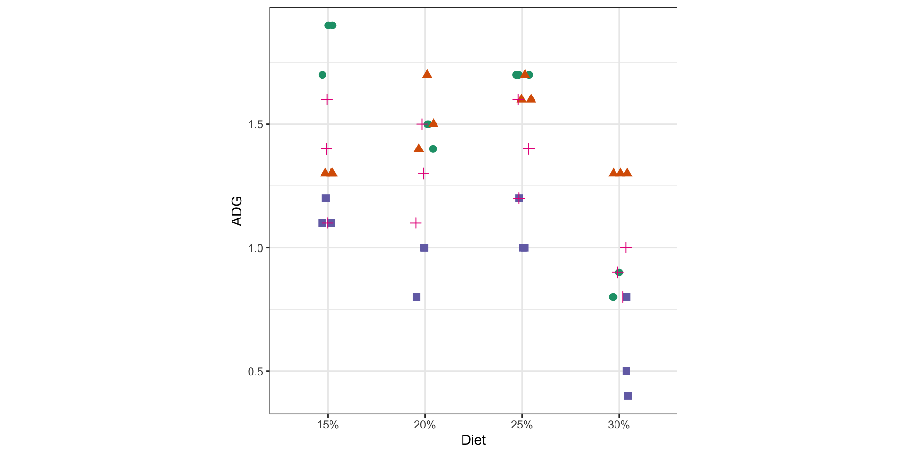
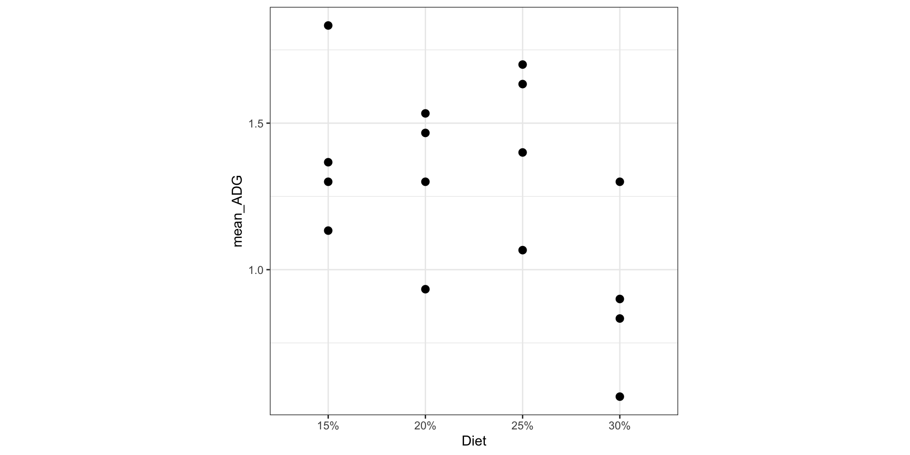
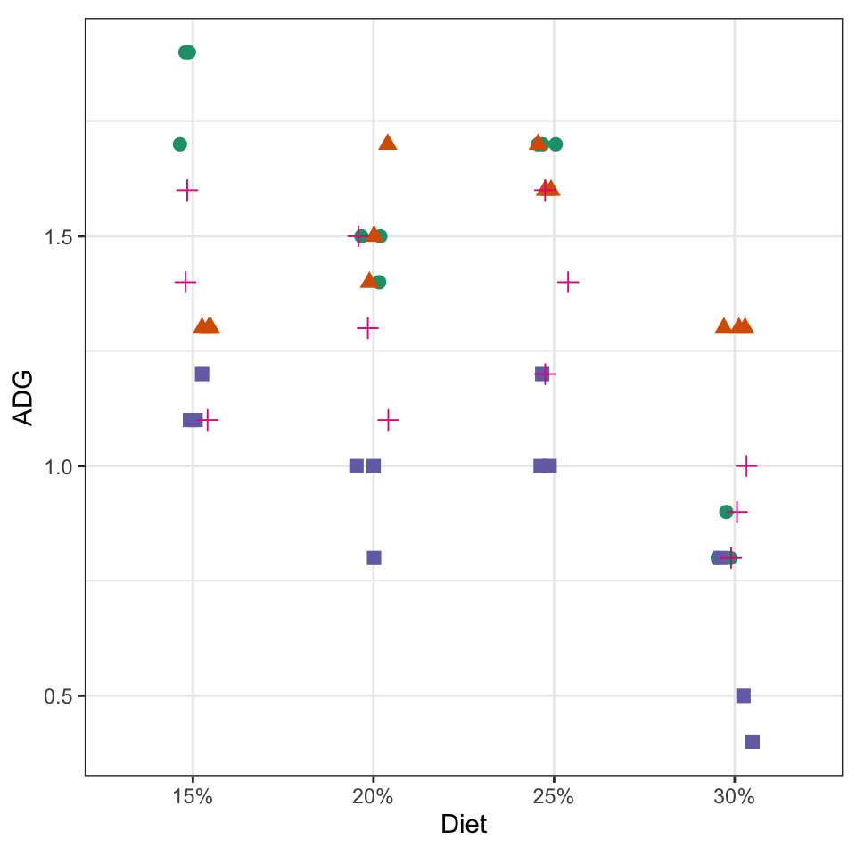

Error in `knitr::include_graphics()`:
! Cannot find the file(s): "images/064-turkey-blueprint.png"Subsampling in Mixed Models
Occurs when multiple observations are taken within each experimental unit.
Researchers study the effect of protein % in diet on turkey growth.
48 turkeys total.
4 diets: 15%, 20%, 25%, 30% applied to each pen.
4 pens per diet
3 turkeys per pen
Response: Average Daily Gain (ADG)
Error in `knitr::include_graphics()`:
! Cannot find the file(s): "images/064-turkey-blueprint.png"Treatment Structure
A one-way treatment design with 4 levels of protein diet (15%, 20%, 25%, 30%) for t = 4.
Design Structure
Protein diet was randomly assigned to pens (e.u.) in a CRD with r = 4. However, ADG is measured on each turkey (m.u.) with \(n_t\) = 3 turkeys per pen.
notation
Since we used \(n\) to indicate the number of e.u. in this class, we will use \(n_t\) as the number of m.u.s per experimental unit! So \(N = n\times n_t\)
Incorrect Analysis - turkey level
Analysis of Variance Table
Response: ADG
Df Sum Sq Mean Sq F value Pr(>F)
Diet 3 2.2783 0.75944 9.3645 6.648e-05 ***
Residuals 44 3.5683 0.08110
---
Signif. codes: 0 '***' 0.001 '**' 0.01 '*' 0.05 '.' 0.1 ' ' 1
| SV | DF: 48 turkeys - 1 = 47 |
|---|---|
| Diet | (4 - 1) = 3 |
| Turkey(Diet) | (12-1)(4) = 44 |
\[y_{ij} = \mu + \tau_i + \epsilon_{ij} \text{ with } \epsilon_{ij} \text{ iid} \sim N(0, \sigma^2)\]
# A tibble: 16 × 3
# Groups: Diet [4]
Diet Pen mean_ADG
<fct> <fct> <dbl>
1 15% 1 1.83
2 15% 2 1.3
3 15% 3 1.13
4 15% 4 1.37
5 20% 1 1.47
6 20% 2 1.53
7 20% 3 0.933
8 20% 4 1.3
9 25% 1 1.7
10 25% 2 1.63
11 25% 3 1.07
12 25% 4 1.4
13 30% 1 0.833
14 30% 2 1.3
15 30% 3 0.567
16 30% 4 0.9 
| SV | DF: 16 pens - 1 = 15 |
|---|---|
| Diet | (4-1) = 3 |
| Pen(Diet) | (4-1)(4) = 12 |
\[y_{ijk}=\mu + \tau_i+\epsilon_{ij}+s_{ijk} \text{ with } \epsilon_{ij} \overset{iid}{\sim} N(0,\sigma_\epsilon^2) \text{ and } s_{ijk} \overset{iid}{\sim} N(0,\sigma_s^2)\] for \(i=1,2,3,4; j=1,2,3,4; k=1,2,3\)
where:
| SV | DF: \(N - 1\) where \(N = n_t rt\) |
|---|---|
| Treatment | t - 1 |
| e.u.(Treatment) \(\rightarrow\) experimental error \(\sigma_{\epsilon}^2\) | (r - 1)(t -1) |
| m.u.(e.u x Treatment) \(\rightarrow\) subsampling variability \(\sigma_s^2\) | (\(n_t\) - 1)rt |

| SV | DF: 48 turkeys - 1 = 47 |
|---|---|
Linear mixed model fit by REML. t-tests use Satterthwaite's method [
lmerModLmerTest]
Formula: ADG ~ Diet + (1 | Diet:Pen)
Data: turkey_data
REML criterion at convergence: -12
Scaled residuals:
Min 1Q Median 3Q Max
-2.06187 -0.40530 -0.00216 0.34474 1.76359
Random effects:
Groups Name Variance Std.Dev.
Diet:Pen (Intercept) 0.07824 0.2797
Residual 0.01708 0.1307
Number of obs: 48, groups: Diet:Pen, 16
Fixed effects:
Estimate Std. Error df t value Pr(>|t|)
(Intercept) 1.40833 0.14486 12.00000 9.722 4.85e-07 ***
Diet20% -0.10000 0.20486 12.00000 -0.488 0.6342
Diet25% 0.04167 0.20486 12.00000 0.203 0.8422
Diet30% -0.50833 0.20486 12.00000 -2.481 0.0289 *
---
Signif. codes: 0 '***' 0.001 '**' 0.01 '*' 0.05 '.' 0.1 ' ' 1
Correlation of Fixed Effects:
(Intr) Dit20% Dit25%
Diet20% -0.707
Diet25% -0.707 0.500
Diet30% -0.707 0.500 0.500Type III Analysis of Variance Table with Satterthwaite's method
Sum Sq Mean Sq NumDF DenDF F value Pr(>F)
Diet 0.15457 0.051523 3 12 3.016 0.07186 .
---
Signif. codes: 0 '***' 0.001 '**' 0.01 '*' 0.05 '.' 0.1 ' ' 1 Diet emmean SE df lower.CL upper.CL t.ratio p.value .group
25% 1.45 0.145 12 1.026 1.87 10.010 <0.0001 A
15% 1.41 0.145 12 0.985 1.83 9.722 <0.0001 A
20% 1.31 0.145 12 0.885 1.73 9.032 <0.0001 A
30% 0.90 0.145 12 0.476 1.32 6.213 0.0002 A
Degrees-of-freedom method: kenward-roger
Confidence level used: 0.95
Conf-level adjustment: sidak method for 4 estimates
P value adjustment: sidak method for 4 tests
P value adjustment: tukey method for comparing a family of 4 estimates
significance level used: alpha = 0.05
NOTE: If two or more means share the same grouping symbol,
then we cannot show them to be different.
But we also did not show them to be the same.